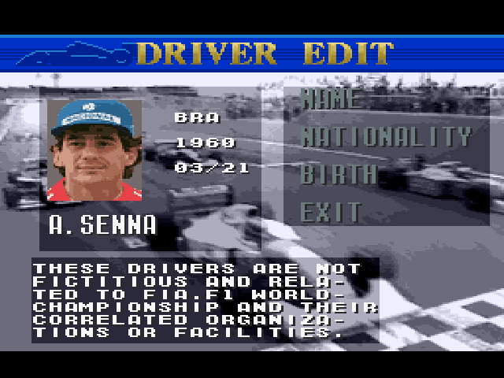

Human Grand Prix IV - Senna Edition
A driver restoration hack for Human Grand Prix IV - F1 Dream Battle on the Super Famicom.
Ayrton Senna appeared as a selectable, editable driver in Human Grand Prix II and III, but was left out of Human Grand Prix IV - the most complete game in the series. This hack puts him back.
The game gives you four editable driver slots that are not part of the starting grid; you swap them into the roster yourself. One of those slots held J.AMATI, a driver who never qualified for a race. That slot is now Ayrton Senna, with his own portrait drawn in the style of the game's own driver art, his correct nationality, and his real date of birth.
While in there, the three remaining editable slots were corrected to match reality as well, and six misspelled place names were fixed.
Everything else is untouched. This is a minimal, surgical hack: 2,086 bytes changed out of 2 MB, and every one of them is data. No executable byte differs from the original game, so timing, physics, handling and every other behaviour are bit-for-bit the original.
What it changes
| Slot | Name | Change |
|---|---|---|
| 1 | J.AMATI → A.SENNA | BRA, 1960, 03/21 - Ayrton Senna, with a new portrait and a new palette |
| 0 | J.BOULLION → J.C.BOULLION | FRA, 1969, 12/27 - Jean-Christophe Boullion, his real name and real date of birth |
| 2 | T.BOUTSUN → T.BOUTSEN | The game misspelled Thierry Boutsen; his nationality and date of birth were already correct |
| 3 | C.FITTIPALDI | Unchanged - the base game already had Christian Fittipaldi right |
Senna's team was also corrected: the slot carried Amati's 92.BRABHAM, a team Senna never drove for. It is now 92.MCLAREN.
The disclaimer panel on the driver edit screen read "THESE DRIVERS ARE FICTITIOUS AND NOT RELATED TO..." - with real drivers in those slots it now reads "THESE DRIVERS ARE NOT FICTITIOUS AND RELATED TO...". One word moved; nothing else in the text was rewritten.

Place name corrections
Six names were misspelled in the original English text. Each appears on the course screen, on the city line, or both - all are corrected:
| Original | Corrected | Where |
|---|---|---|
| IMORA | IMOLA | Course screen and city line |
| SILVER STONE | SILVERSTONE | Course screen and city line |
| MONTECARLO | MONTE CARLO | Course screen and city line |
| MAGNYCOURS | MAGNY-COURS | Course screen and city line |
| JERES | JEREZ | City line - the course title already read JEREZ correctly |
| JOHANNESBUR | JOHANNESBURG | City line |
Every correction fits inside the game's existing text fields. No field was widened and no string was moved, so nothing adjacent is disturbed.
Names left as the developers wrote them, deliberately. The game refers to circuits by location rather than by official name - HOCKENHEIM, MONTREAL, BUENOS AIRES, INTERLAGOS, RODRIGUEZ. That is a consistent editorial style, not an error, so it has been preserved. NURBURGRING keeps its spelling because the font has no umlaut.
Notes
- The portrait replaces the stored graphics data outright rather than being patched in at runtime. Nothing in the game points at Amati's portrait any more, so her face cannot appear on any screen, in any mode or era.
- Senna's portrait background colour was chosen to be unique - no other driver in the game uses it.
- All four slots remain fully editable in-game. You can still rename them, change nationality and date of birth, and swap them into the roster exactly as in the unmodified game.
- Portrait art was built from a photograph and matched to the original artists' pixel style by measurement: colour count, saturation range, pixel-to-pixel contrast and dither texture were all compared against the game's own portraits. See the technical overview for the numbers.
- Tested on hardware and in emulation: driver edit, contract screens, the roster, in-race play, the pit and garage, saving to SRAM, and the victory podium.
Patch
patches/Human Grand Prix IV - Senna Edition.ips
Apply the patch to the English-translated 2 MB ROM with any IPS patcher, for example Floating IPS / Flips or Lunar IPS. No ROM file is included in this repository.
| Base ROM | After patching | |
|---|---|---|
| File | Human Grand Prix IV - F1 Dream Battle (Japan) (En).sfc | Human Grand Prix IV - Senna Edition.sfc |
| Size | 2,097,152 bytes, no copier header | 2,097,152 bytes |
| CRC32 | 47453477 | 9629328D |
| MD5 | 6E5F7A29C72B33D684B57CA369FF8CD1 | BE9802BABCC793E660CC20A7EB07FA20 |
| SHA-1 | 09B40B6138C473CAEC41B670912FBECC7F858555 | 785845A0EB39CA4FBD6FDF19722884418C00CB93 |
The patch itself is 2,384 bytes, MD5 1AF90692D758A2DF7A6F927B4FD1AA2C. The patch will not produce a working game on any other revision, so confirm your ROM matches the CRC32 and MD5 above before applying it. Verify the result against the patched hashes afterwards. Distribute the IPS patch only, never the patched ROM.